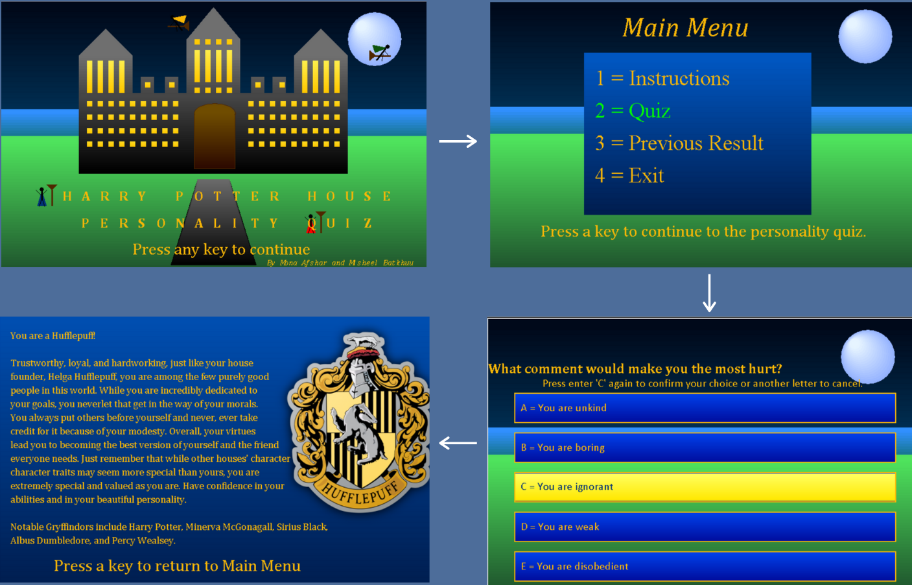

Harry Potter Personality Quiz
In my grade 11 Computer Science class I was asked to parter up with a classmate in order to create an interactive game/quiz. My partner Misheel and I decided to create a personality quiz that predicts your Hogwarts House from Harry Potter.
The program was written in java using "Ready to Program", the application in which they were learning to program for this course. The code consisted of graphics and read-write file applications, where it would randomly select 10 questions from a bank of 50 questions, then displayed them onto the screen. Based on the answers of the user, it would count how many times each option was selected then it would catogorize the user into one of the houses. We stored the 50 possible bank of questions into 50 read-only files, so that the 10 random questions will be randomly pulled from array of files.
Learn more

"Kelp the Oceans""
In my grade 10 science class we were asked to come up with a technology that could possibly help lower the impacts of climate change on our earth within the next 20 years. This is where I partnered with Rose and Suraiya some of my classmates, to come up with "Kelp the Oceans". This project consists of a device that plants kelp simultaneously while a boat moves. Kelp is an algae that aids in lowering the acidity in our oceans. Ocean acidification is caused by an excess amount of carbon dioxide being absorbed in our oceans, but kelp absorbs the extra CO2 as it grows. This means that planting Kelp could possible aid in loweing ocean acidification in a certain area, and thus aiding in restoring lost marine ecosystems. We even ended up winning an honourable mention prize with Exploravision contest.
Check out the Exploravision annual contests
Water Trackers
This website helps Canadians and Americans that live in commonly flooded regions to prepare for the possibility of a flood. The website has an interactive map that shows all the regions that are at risk of flooding. It also has a step-by-step guide on how what precautions to take before, during and after a flood.
Check out the website